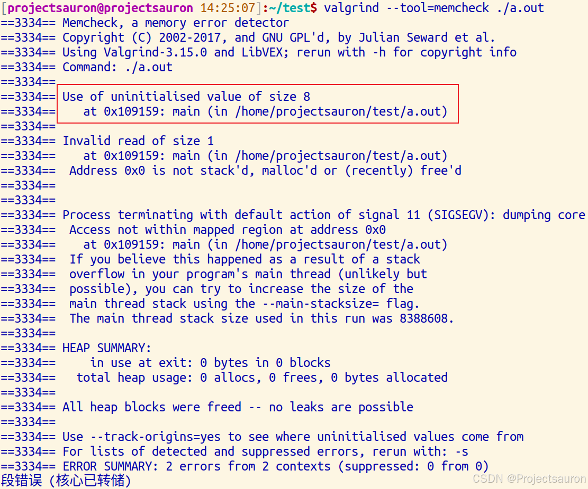
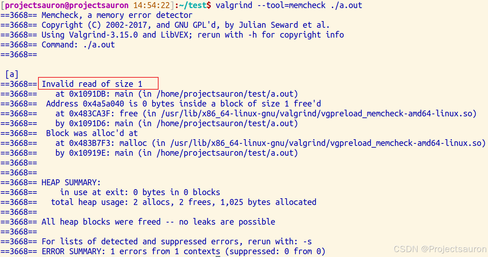
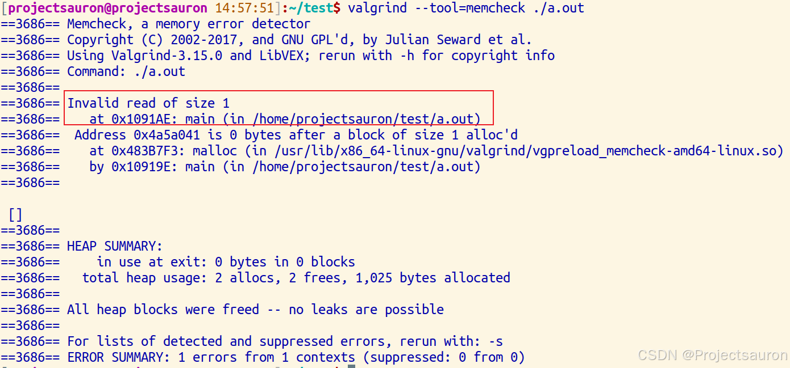
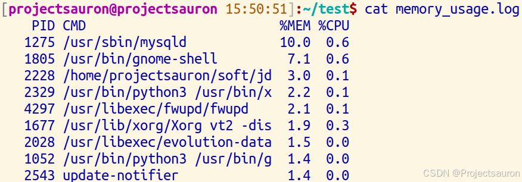

Linux 下利用 Valgrind 进行内存调试
[toc]
一、概述
Valgrind 是一个开源的内存调试和性能分析工具，用于帮助开发者找出程序中的内存错误，如内存泄漏、使用未初始化的内存、非法内存访问等问题。它在 Linux 平台上广泛使用，并且支持下多种处理器架构。
二、Valgrind 的使用
1、基本格式
1 | valgrind --tool=memcheck -–gen-suppressions=all -–show-leak-kinds=all --log-file=<filename> --leak-check=yes ./your_app arg1 arg2... |
- valgrind：这是一个内存调试工具集，其中的
memcheck是其中的一个工具，它用于检查内存相关的错误。 - -–gen-suppressions=all：误报是内存泄漏排查中的常见现象。使用该参数，我们可以标记那些误报，生成抑制规则，让
Valgrind在后续的检查中忽略这些特定的情况。 - –show-leak-kinds=all：显示所有的内存泄漏信息。
- **–log-file=<filename>**：这是一个选项，用于指定
Valgrind输出的日志文件的文件名。你可以将<filename>替换为你想要的文件名或路径。 - –leak-check=yes：这个选项告诉
Valgrind在程序运行结束后检查内存泄漏。它将会列出程序中存在的任何未释放的内存。（还有一种写法：--leak-check=full，意思是一样的） - ./your_app：这里应该是你要检查的可执行文件的路径。将
your_app替换为你的程序的实际名称。 - **arg1 arg2..**：这些是你的程序可能需要的命令行参数。用空格分隔，替换为你程序实际需要的参数。
2、Valgrind 工具集
Valgrind 工具集包含多个工具，每个工具都针对不同的调试、分析和性能优化任务。以下是 Valgrind 工具集中一些常用的工具：
- Memcheck：这是
Valgrind最常用的工具之一，用于检测程序中的内存错误，例如内存泄漏、未初始化的内存读取、非法内存访问等。 - Cachegrind：用于模拟缓存和分支预测器的行为，帮助优化程序的缓存使用和执行路径。
- Callgrind：用于程序性能分析，跟踪函数调用关系和执行次数，帮助找出程序中的性能瓶颈。
- Helgrind：专门用于检测多线程程序中的并发错误，如数据竞争、死锁等问题。
- Massif：用于分析程序的堆内存使用情况，包括堆分配、释放和堆内存的快照。
- DHAT (Dynamic Heap Analysis Tool)：用于深入分析程序的堆内存分配情况，帮助找出内存分配和使用方面的问题。
- BBV(Basic Block Vectors)：可用于收集程序中基本块的统计信息，帮助理解程序的执行路径和性能特征。
每个工具都有其特定的用途和优势，可以根据需要选择合适的工具来进行程序调试、性能优化或内存分析。
接下来主要是介绍 Memcheck 工具的使用。
3、Memcheck
Valgrind 在内存检测方面主要有四个使用场景：
- 使用未初始化的内存
- 内存泄漏
- 在内存被释放后进行读/写
- 内存块的尾部进行读/写
3.1 使用未初始化的内存
首先看一个例子：
1 |
|
可以看出，这里访问了一个野指针。接下来编译：
1 | $ gcc test |
然后使用 Valgrind 工具分析：
1 | $ valgrind --tool=memcheck ./a.out |
报错信息和出现错误的位置都打印了出来：

3.2 内存泄漏
还是先看代码：
1 |
|
可以看到，这里为 p 指针申请了一个地址，不过最后没有 free 掉这个地址就 return 0 了，也就是会照成内存泄漏。先编译：
1 | $ gcc test |
然后使用 Valgrind 工具分析：
1 | $ valgrind --tool=memcheck --leak-check=full ./a.out |
结果如下，可以看到提示信息显示 alloc 了 2 次，但却只 free 1 次，所以发生了内存泄漏，再下面是内存泄漏的详细信息。

3.3 在内存被释放后进行读/写
示例代码如下：
1 |
|
编译后，用 vallgrind 查看：
1 | $ gcc test.c |
上面的代码中，我们有一个释放了内存的指针 p，然后我们又尝试利用指针获取值。从下面的输出内容可以看到，Valgrind 检测到了无效的读取操作然后输出了警告”Invalid read of size 1‘.

3.4 内存块的尾部进行读/写
代码如下：
1 |
|
1 | $ gcc test.c |
可以看到，这里依旧是非法的读，因为我们只申请了 1 个字节空间：

4、常见错误
下面是一些日志打印中常见的错误：
- malloc/free: in use at exit ：内存在退出前没有释放
- invalid write of size：非法写入内存，一般为数组越界
- invalid read of size：非法读内存：一般为数组越界
- definitely lost /possibly lost /still reachable in loss record：内存未释放
- definitely ：确认丢失。程序中存在内存泄露，应尽快修复。
- indirectly：间接丢失。当使用了含有指针成员的类或结构时可能会报这个错误 。
- possibly：可能丢失。大多数情况下应视为与”definitely lost”一样需要尽快修复。
- still reachable：可以访问，未丢失但也未释放。如果程序是正常结束的，那么它可能不会造成程序崩溃，但长时间运行有可能耗尽系统资源。
- suppressed：已被解决。出现了内存泄露但系统自动处理了。可以无视这类错误。
- **invalid free()/delete/delete[]**：同一指针被多次释放
- source and destination overlay：一般是使用strncpy,memcpy引起
- syscall param contains uninitialized byte：调用系统函数时传入了未初始化的变量
- conditional jump or move depends on uninitialized value ：条件判断时使用了未初始化的变量
- access not with mapped region/stack overflow：栈溢出
- mismatch free()/delete/delete[]/new：delete/malloc/free搭配错误
三、分析内存泄漏的使用技巧
1、Valgrind 协调 GDB 工作
在 Linux 内存泄漏的排查过程中，Valgrind 和 GDB 的结合使用是一种强大的调试策略。Valgrind 能够帮助我们发现程序中的内存泄漏，而 GDB 则允许我们深入程序的执行，查看变量和内存状态，从而精确地定位问题。
Valgrind 提供了一个 --vgdb-error=0 的选项，允许我们在第一个错误发生时立即启动 GDB。这样，我们可以在程序执行到可能出现内存泄漏的地方时，立即进行检查。
下面是操作流程：
- 启动
Valgrind，带有GDB调试支持：
1 | $ valgrind --tool=memcheck --vgdb=yes --vgdb-error=0 ./a.out |
- 当
Valgrind报告内存错误时，它会暂停程序执行。 - 在==另一个终端==中，我们可以启动
GDB并连接到Valgrind：
1 | $ gdb ./a.out |
- 然后就可以使用
GDB的调试命令了，我们可以检查导致错误的代码行，查看变量的值和内存的状态。
2、利用 /proc 定位问题
Linux 的 /proc 文件系统包含了系统运行时的各种信息，其中也包括了进程的内存映射情况。通过分析 /proc/[pid]/maps 文件，我们可以得知进程的内存分配情况，这对于定位内存泄漏非常有用。
每个进程的 /proc/[pid]/maps 文件都记录了该进程的内存映射。我们可以通过以下命令查看特定进程的内存映射：
1 | $ cat /proc/[pid]/maps |
[pid] 需要替换为我们怀疑存在内存泄漏的进程ID。通过分析这个文件，我们可以看到进程的内存分配情况，包括哪些库文件被加载，以及它们的内存地址范围。

从左向右的六列数据的含义如下：
- 地址范围：表示内存段的起始和结束地址。
- 权限：表示内存段的访问权限。
- 偏移量：表示从文件开始到映射区域开始的偏移。
- 设备：表示关联的设备。
- 节点：表示文件系统中的节点号。
- 路径：表示映射到的文件路径，如果是
[heap]则表示堆内存区域。
如果发生内存泄漏，表格中的某些行会显示出异常的模式，特别是在堆或者可能的匿名映射（通常是堆或栈的扩展）区域。以下是一些可能表明内存泄漏的情况：
- 堆内存增长：如果
[heap]区域的地址范围随时间不断增长，这可能表明堆内存正在泄漏。 - 频繁的小块分配：大量小块内存分配并且没有对应的释放，可能会在表格中显示为许多小范围的内存映射。
- 匿名映射：大量的匿名映射（没有关联路径的映射）可能是动态分配内存未被释放的迹象。
比如，下列数据展示了可能的内存泄漏的情况：
1 | 02557000-03578000 rw-p 00000000 00:00 0 [heap] |
在这个例子中，我们看到：
[heap]区域的大小异常，表明可能有大量的内存分配没有得到释放。- 存在连续的
rw-p权限的匿名映射，这些可能是由于内存分配（如 malloc 或 new）造成的，如果这些区域的大小不断增长，且没有相应的释放，那么很可能是内存泄漏的地方。
3、使用 top、ps 识别异常进程
3.1 使用 top
1 | $ top -o %MEM |
这个命令会将进程按内存使用率进行排序，帮助我们更快地定位到内存使用异常的进程。
在使用 top 命令观察进程的内存使用情况时，我们需要关注的是内存使用量（RES）和虚拟内存使用量（VIRT）。内存泄漏通常表现为随着时间的推移，这两个值会不断增加。
- 内存使用量（RES）：进程实际使用的物理内存大小。如果一个进程存在内存泄漏，我们会看到 RES 值不断上升，即使在没有新的活动产生时也是如此。这是因为泄漏的内存没有被操作系统回收，从而导致物理内存的持续占用。
- 虚拟内存使用量（VIRT）：包括进程使用的所有内存，不仅包括RES，还包括进程未使用但已分配的内存。内存泄漏会导致VIRT值不断增加，这是因为进程请求了更多的内存，但并未释放。
3.2 使用 ps
我们可以使用 ps 命令的 -o 选项来自定义输出，以便专注于内存相关的信息。例如：
1 | $ ps -eo pid,ppid,cmd,%mem,%cpu --sort=-%mem |
这个命令将列出所有进程，并按内存使用率降序排列，显示每个进程的 PID、PPID、命令行、内存使用率和 CPU 使用率。
结合历史数据，我们可以分析进程的内存使用趋势。通过定期记录 ps 命令的输出，我们可以创建一个内存使用的时间序列，这有助于我们识别内存泄漏的长期趋势。
1 | ! /bin/sh |
这段脚本会每分钟记录内存使用最高的 10 个进程，并将结果追加到 memory_usage.log 文件中。
